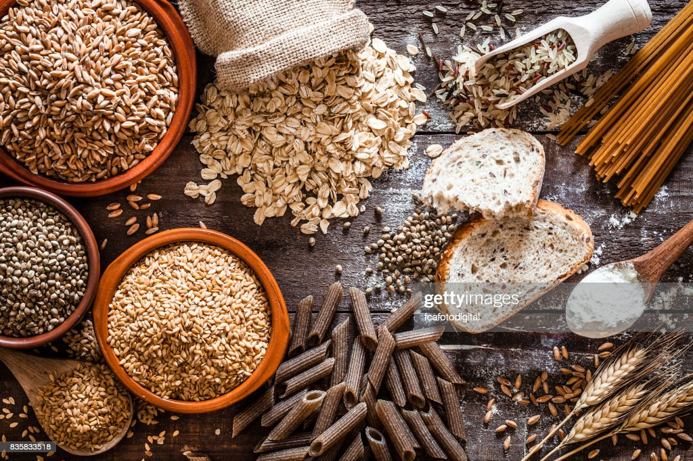
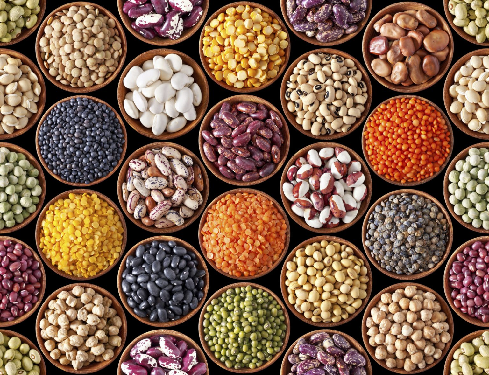
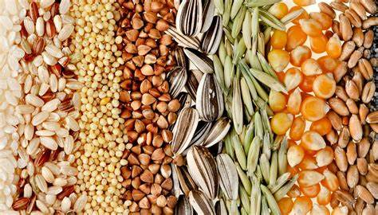
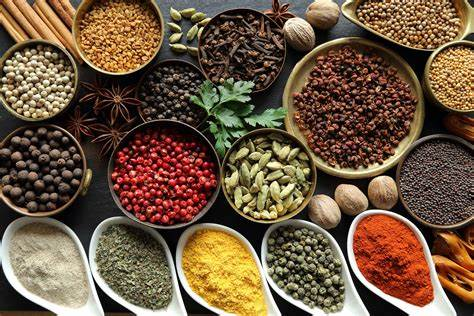
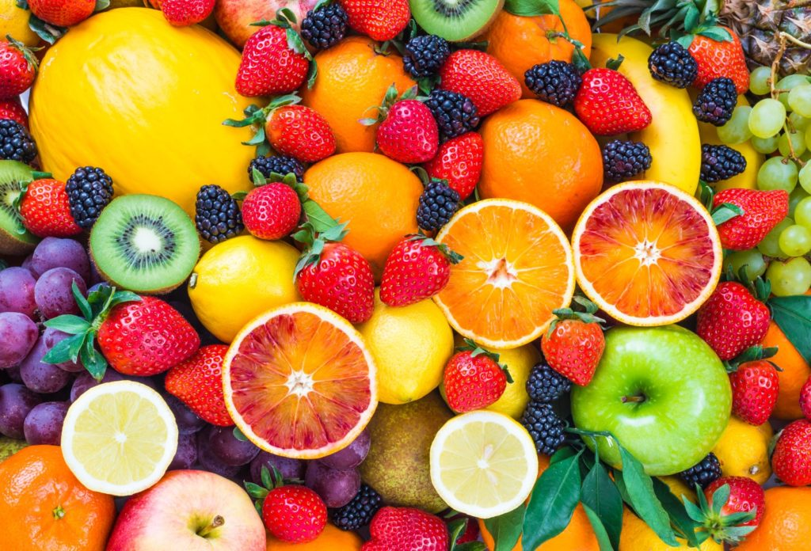
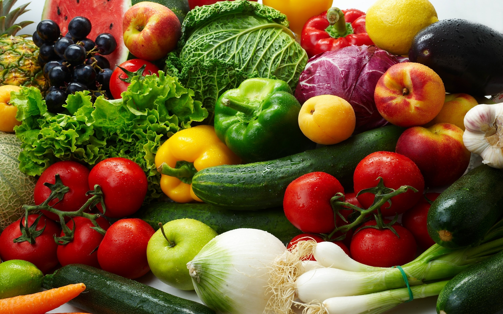

The agricultural products obtained from plants includes but not limited to the following.
i. Cereals or Cereal Crops:

These are grains and are known to be the staple food in most countries. They contain more of carbohydrates than proteins. Examples of cereals are rice, rice bram, maize or corn, wheat, millets, barley, rye, sorghum, oats, etc. Although significant amount of cereals are consumed globally, however statistics has shown that rice is more or less the most consumed cereal in the world since it is known to be the primary food source for more than half of the world’s population.
ii. Pulses:

Like cereals pulses are also grains but they are known to contain more proteins than carbohydrates. Pulses are otherwise referred to as legumes. Typical examples of pulses are beans ( which come in different varieties like common beans, soybeans or soya beans, cocao beans, pinto beans, kidney beans, navy beans, etc ), peas ( e.g cowpea, chick pea, pidgeon pea, gaden pea ), peanut ( groundnut ), lentils, lupins, vetches, etc.
iii. Seeds:

Generally, they are covered by seed coats. Typical examples of seeds are mustard seeds, cotton seeds, sesame beans, basil seeds, castor seeds, etc.
iv. Spices:
 Spices are known to enhance the flavour and taste of food and so they are mainly used as food additives. Examples of spices are pepper, ginger, onion, turmeric, cinnamon, etc.
v. Fruits:
 These are sources of water, minerals, vitamins, fibres, etc. They are succulent and better enjoyed when they are fresh. Typical examples of fruits are orange, grape, apple, blueberry, pineapple, mango, raspberry, banana, water melon, strawberry, etc.
vi. Vegetables:
 These are good sources of vital nutrients ranging from supply of vitamins to supply of minerals. Typical examples of vegetables are okra or okro, cucumber, mush room, spinach, cabbage, etc.
vii. Essential oils:
These are oils obtained from aromatic plants. Typical examples are frankincense oil, rose oil, juniper oil, lavender oil, cod liver oil, jasmine oil, etc.